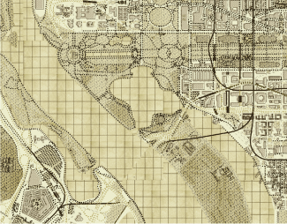

Stephanie Nguyen Product Design + UX/UI Design + Research
Visual designs
2016-2017
A variety of visual designs, brand marketing and logo projects ranging from small startups to larger private and public sector organizations.
Category
Visual design, branding and logos
Wanderbee
Logo design
Wearably
Logo design
StartupWeekend DC
Shirt design
Map Design
Cartography

Infographic
data visualization + illustration
Concept sketches
various things
Various logos for a suite of software tools
Logo design
U.S. Digital Service Website Branding
2016-2017
The United States Digital Service is a startup at The White House, using design
and technology to deliver better services to the American people.
Category
Branding, Illustration
Daily Galaxy Notes
2013-2014
I was inspired to sketch with the stylus once I got my Samsung Galaxy Note III. These daily illustrations are meant to visualize a morning news headline and provoke thought without an editorial slant.